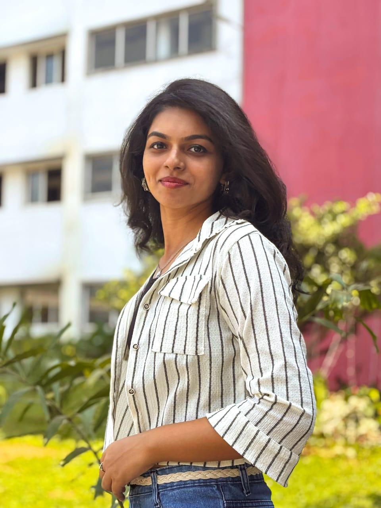

KEERTHANA DHANISH

Final-year B.Tech student in Artificial Intelligence & Data Science
Passionate about AI, Data Science, and tech for good
🌍 Creative thinker | ✈️ Loves traveling | 🧩 Enjoys problem-solving | 🔍 Curious about new technologies
-
About Me
A highly motivated B.Tech student in Artificial Intelligence and Data Science with a strong
academic record. Passionate about exploring new technologies and developing innovative
solutions to real-world problems. A creative thinker with a keen interest in research, problemsolving, and hands-on project development. Eager to apply technical expertise and analytical
skills to drive meaningful advancements in AI and Data Science.
-
Tech Skills
- Programming Languages: Python, R, C
- Web Development: HTML, CSS, JavaScript
- Data Analysis: Pandas, NumPy, Matplotlib
- Machine Learning , Gen AI (basics)
- Database Management: SQL, Django
-
Soft Skills
- Creative Thinking
- Problem Solving
- Leadership Quality
- Team Collaboration
- Effective Communication
-
Education
-
Muthoot Institute of Technology and Science | 2022-2026
Bachelor of Technology in Artificial Intelligence and Data Science
CGPA: 9.11
-
Navy Children School, Goa | 2020-2022
Higher Secondary Education (CBSE, Science stream)
Percentage: 98%
-
Coast Guard Public School, Daman | 2016-2020
Secondary Education (CBSE)
Percentage: 97.2%
-
Courses
- Python for Data Science-IIT Kharagpur
(Elite+Silver certification) | 2024 - NPTEL
- Introduction to Machine Learning-IIT Madras
(Topper 5% certification) | 2024 - NPTEL
- Data Mining-IIT Kharagpur
(Elite+Silver certification) | 2025 - NPTEL
- Google Cloud Foundation Courses | 2024 - Google
- BS Degree in Data Science &
Applications | 2024-Present - IIT Madras (Online)
-
Achievements
-
Shotlisted as finalists for V-Guard Big Idea | 2024
Held by V-Guard
Shortlisted among top-20 finalist in V-Guard Big Idea Tech
Design Contest.
Created an innovative ductless kitchen exhaust hood with smart
monitoring, safety alerts and energy efficiency.
-
TINK-HER-HACK 2.0 | 2024
Held by TinkherHub
Participation Certification
Developed "DocTrack," a system that streamlines patient data
management for doctors, ensuring secure, accessible, and
efficient healthcare delivery.
-
Certifications
- Attended 5 days add-on course on 'Web Development using Python and Django' from
22-6-24 to 28-6-24
- Attended a workshop on 'Digital Marketing' conducted as a part of Ragam 2023
workshop series, NIT Calicut on 12-03-23.
- Participated in 5 days internship program on 'Artificial Intelligence using python'
Conducted by Qnayds LLP From 26-12-22 to 31-12-22.
- Participated in the "YUKTHI'24" Hackathon on 15-03-24 and 16-03-24.
-
Hobbies
- Traveling
- Drawing
- Dancing
- Listening to music
- Watching movies
-
Languages
- English
- Hindi
- Malayalam
- Tamil
-
Contact
Contact Page